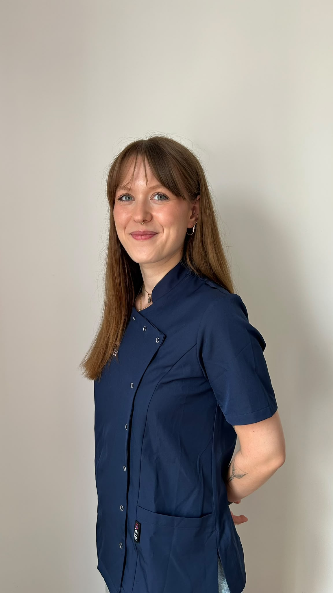
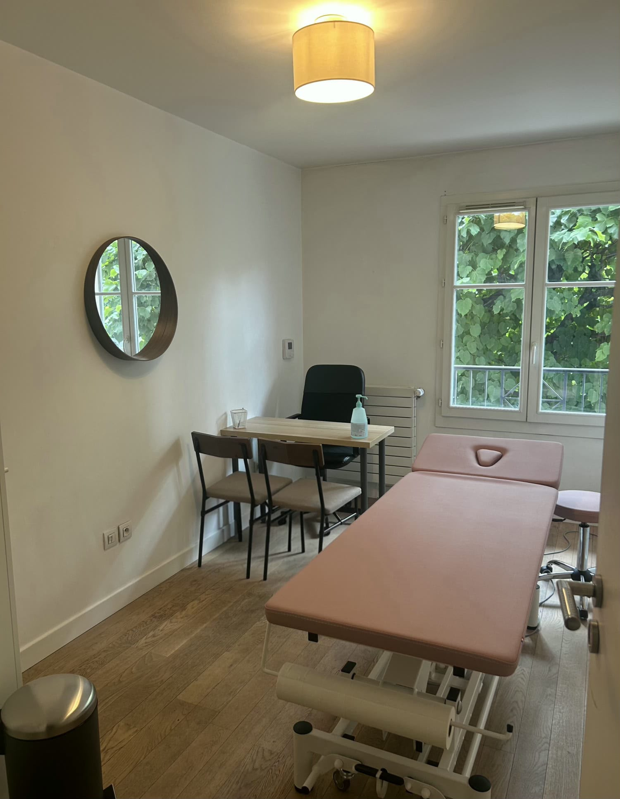

Ostéopathe diplômée de l’Ecole d’ostéopathie de Paris (EOP), niveau RNCP 7

L'ostéopathie est une thérapie manuelle qui vise à prévenir, restaurer et préserver l'équilibre du corps. Elle repose sur une approche globale du patient, en considérant que les différentes structures de l'organisme sont étroitement liées et fonctionnent en interaction.
À l'aide de techniques exclusivement manuelles, l'ostéopathe évalue puis traite les restrictions de mobilité susceptibles d'altérer le bon fonctionnement des tissus et de l'organisme. L'objectif est d'améliorer la qualité et la quantité de mouvement, de favoriser les capacités d'adaptation du corps et d'accompagner durablement le patient vers un meilleur équilibre.
Chaque consultation est individualisée afin de prendre en compte votre histoire, vos habitudes de vie et vos besoins, dans le but de proposer une prise en charge adaptée à votre situation.

Ancienne gymnaste de compétition pendant 10 ans, j'ai dû mettre fin à ma pratique sportive à la suite d'une blessure. C'est à cette période que j'ai découvert l'ostéopathie. Dès ma première consultation, ce métier s'est imposé comme une évidence, étant animée depuis toujours par l'envie d'aider les autres grâce à une approche humaine et manuelle.
Grâce à ce parcours, j'ai développé un intérêt particulier pour la prise en charge des sportifs et la compréhension des contraintes liées à la pratique physique. Je porte également une attention toute particulière à la périnatalité, un domaine qui me passionne, en accompagnant les femmes dans leur désir de grossesse, tout au long de la grossesse et après l'accouchement, ainsi que les nourrissons dès leurs premiers jours de vie.
Aujourd'hui, je mets mes compétences et mon écoute au service de chacun de mes patients, avec un objectif simple : vous accompagner vers un meilleur équilibre et améliorer durablement votre qualité de vie.
Quelle que soit la raison de votre consultation, mon objectif est de vous proposer une prise en charge personnalisée, adaptée à vos besoins et à votre mode de vie.
Au cours de ma formation, j'ai eu l'opportunité d'effectuer de nombreux stages en milieu hospitalier, en clinique et sur le terrain, me permettant d'enrichir ma pratique auprès de patients aux profils variés.
2021 – 2026
Diplôme d'Ostéopathe D.O obtenu en 5 ans.
Prise en charge ostéopathique des femmes enceintes, des patientes en post-partum et des nourrissons.
Prise en charge ostéopathique des femmes enceintes, des patientes en post-partum et des nourrissons.
Prise en charge ostéopathique d'enfants et d'adolescents.
Prise en charge ostéopathique de femmes enceintes, de patientes en post-partum, de nourrissons, d'adolescents et de professionnels de santé.
Prise en charge ostéopathique de patients hospitalisés en service de réanimation.
Prise en charge ostéopathique de patients suivis en cancérologie.
Prise en charge ostéopathique de patients au sein d'un établissement hospitalier spécialisé.
Prise en charge ostéopathique de professionnels de santé.
Prise en charge ostéopathique de résidents.
Prise en charge ostéopathique des participants avant et après les épreuves.
Prise en charge ostéopathique de patients suivis en cancérologie.
Prise en charge ostéopathique de patients de tous âges présentant des motifs de consultation variés.
Juillet 2026
Puteaux (92800) — Consultations sur rendez-vous, du lundi au samedi.
L'ostéopathie s'adresse à tout le monde, de la naissance au grand âge
La séance débute par un temps d'échange afin de comprendre le motif de votre consultation. Nous abordons ensemble l'histoire de vos douleurs, vos antécédents médicaux et chirurgicaux, vos traitements, votre mode de vie, votre activité professionnelle ou sportive, ainsi que tout élément pouvant avoir un impact sur votre état de santé. Cette étape est essentielle pour orienter l'examen clinique et proposer une prise en charge adaptée.
Je réalise ensuite un examen clinique comprenant des tests d'observation, de mobilité, ainsi que des tests orthopédiques, neurologiques ou médicaux si nécessaire. Cette évaluation permet d'identifier l'origine de vos symptômes, d'établir un diagnostic ostéopathique et de vérifier qu'aucune contre-indication ne nécessite une réorientation vers un autre professionnel de santé.
Le traitement est entièrement personnalisé et adapté à vos besoins. À l'aide de techniques manuelles, je travaille sur les différentes structures du corps afin de restaurer leur mobilité, favoriser un fonctionnement optimal de l'organisme et vous accompagner vers un mieux-être durable. Les techniques utilisées sont choisies en fonction de votre âge, de votre motif de consultation et de vos préférences.
En fin de consultation, je vous propose des conseils personnalisés afin de prolonger les effets du traitement. Ils peuvent prendre la forme d'exercices, d'étirements, de conseils ergonomiques, d'adaptations de certaines habitudes de vie ou de recommandations en lien avec votre activité quotidienne.
Je vous recommande de venir avec une tenue confortable, permettant de réaliser quelques mouvements lors de l'examen clinique. Si cela est nécessaire, il pourra vous être demandé de vous mettre en sous-vêtements afin de réaliser une évaluation précise. Votre confort, votre intimité et votre consentement sont bien entendu respectés tout au long de la séance.
Si vous possédez des examens complémentaires (radiographies, IRM, scanner, échographie, bilan sanguin, compte rendu médical, etc.) en lien avec votre motif de consultation, pensez à les apporter. Ils pourront compléter l'évaluation et permettre une prise en charge encore plus adaptée.
L'ostéopathie s'adresse à tous, quel que soit l'âge ou le mode de vie. Chaque prise en charge est adaptée aux besoins, aux antécédents et aux objectifs de chaque patient. Les motifs de consultation présentés ci-dessous sont des exemples et ne constituent pas une liste exhaustive. Il est également possible de consulter sans douleur, dans une démarche de bilan, de prévention ou simplement afin d'évaluer son équilibre corporel. Avant toute prise en charge, un examen clinique complet est réalisé afin de déterminer si un accompagnement en ostéopathie est adapté à votre situation. Si nécessaire, une réorientation vers un autre professionnel de santé pourra être proposée.
La naissance représente une étape importante pour le bébé. Un accouchement long, rapide, instrumentalisé ou une césarienne peuvent parfois entraîner des contraintes pour le nouveau-né, qui pourront être évaluées lors d'un bilan ostéopathique.
Quelques motifs de consultation :
Quand consulter ?
Un bilan peut être réalisé dans les premières semaines de vie, notamment après un accouchement difficile ou en cas de signes d'inconfort chez le nourrisson.
La croissance, les changements corporels, les activités sportives ou les contraintes du quotidien peuvent influencer l'équilibre du corps.
Quelques motifs de consultation :
Quand consulter ?
En cas de douleur, après un traumatisme, lors de périodes de changement importantes ou dans une démarche préventive.
La grossesse et le post-partum entraînent de nombreuses adaptations du corps pouvant être à l'origine de douleurs ou d'inconforts. L'ostéopathie peut accompagner ces changements, en complément du suivi médical.
Quelques motifs de consultation :
Quand consulter ?
Une consultation peut être envisagée pendant la grossesse ainsi qu'après l'accouchement, en complément du suivi médical et de la rééducation périnéale lorsqu'elle est indiquée.
Grâce à mon parcours de gymnaste de compétition, j'accorde une attention particulière à l'accompagnement des sportifs et à la compréhension des contraintes liées à leur pratique.
Quelques motifs de consultation :
Quand consulter ?
Avant une échéance sportive, après une période d'effort intense, en cas de douleur ou dans une démarche de prévention.
Le quotidien, le travail, les contraintes posturales, le stress ou les activités physiques peuvent être à l'origine de tensions ou de gênes fonctionnelles.
Quelques motifs de consultation :
Quand consulter ?
En cas de douleur, après un traumatisme, lors d'une gêne persistante ou dans une démarche de prévention.
Avec l'avancée en âge, préserver la mobilité et le confort au quotidien participe au maintien de l'autonomie.
Quelques motifs de consultation :
Quand consulter ?
En cas de douleur, de perte de mobilité ou dans une démarche visant à préserver un bon équilibre corporel.
La consultation dure environ 45 min. Elle comprend un bilan complet, le traitement ostéopathique et des conseils personnalisés.
Remboursement mutuelle
L'ostéopathie n'est pas prise en charge par l'Assurance Maladie (Sécurité sociale). Toutefois, de nombreuses mutuelles proposent un remboursement total ou partiel des séances d'ostéopathie selon votre contrat. N'hésitez pas à vous rapprocher de votre organisme de complémentaire santé afin de connaître les modalités de prise en charge.
Une facture d'honoraires pourra vous être remise sur demande afin de permettre votre éventuel remboursement auprès de votre mutuelle.